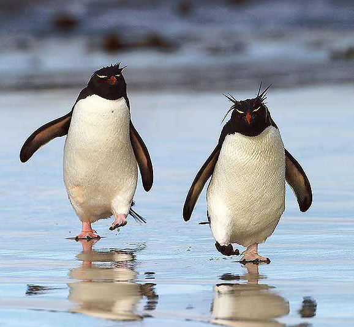

Welcome to my Page

Are aquatic, flightless birds that are highly adapted to life in the water. Their distinct tuxedo-like appearance is called countershading, a form of camouflage that helps keep them safe in the water. Penguins do have wing-bones, though they are flipper-like and extremely suited to swimming. Penguins are found almost exclusively in the southern hemisphere, where they catch their food underwater and raise their young on land.